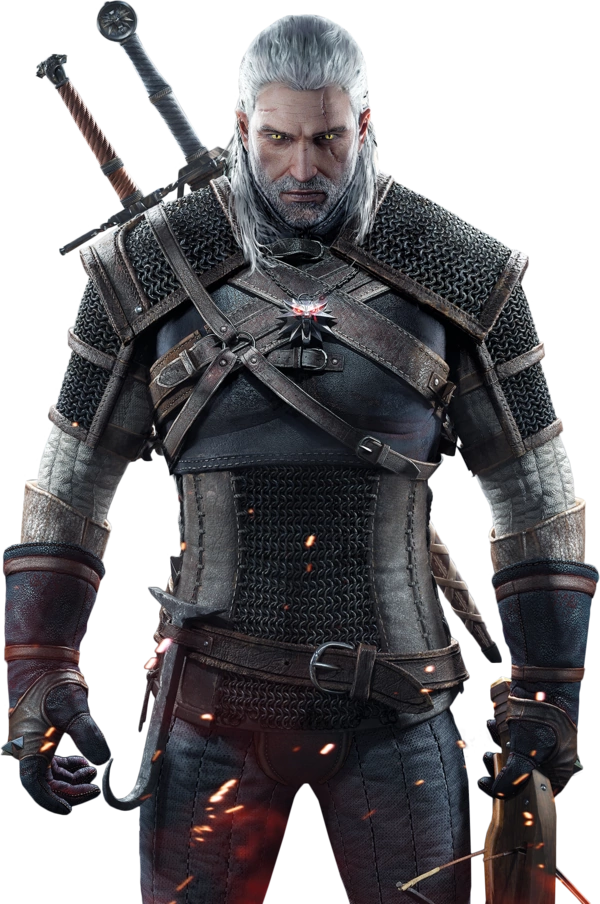
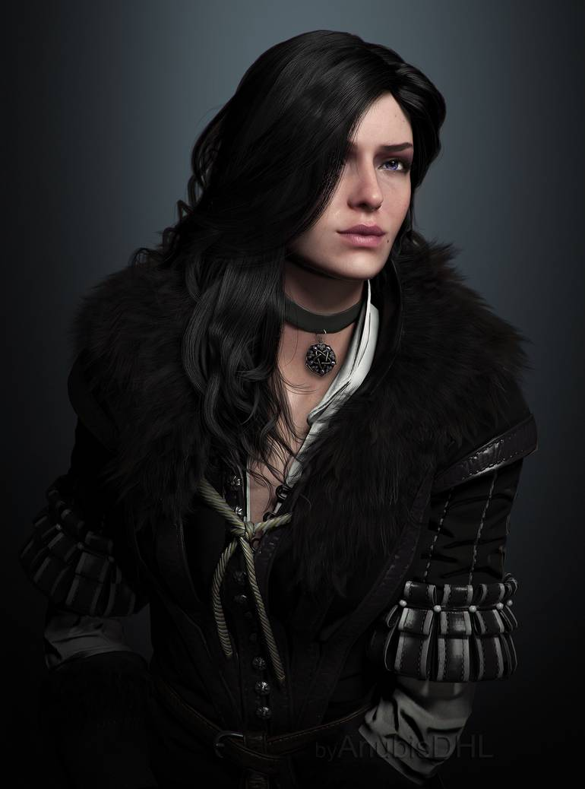

Postavy
Ve světě se pohybuje mnoho postav. Existují postavy kladné, záporné, neutrální nebo postavy, které mají kladné i záporné vlastnosti a části v příběhu.
Geralt z Rivie
Zaklínač Geralt je hlavní protagonista celé ságy Zaklínače. Je to potomek čarodějky a lidského otce, což je nezvyklé, protože čarodějky bývají často neplodné. Přestože zaklínači bývají díky mutacím zbavení citů, tak Geralt je jiný. Na povrch se tváří bezcitně, ale uvnitř je citlivý a dokáže pomáhat lidem.
Poprvé se v knihách objevil, když šel vysvobodit dceru krále Foltesta z kletby, která proměnila na strigu. Tuto kletbu se mu povede zlomit, ale díky této zakázce získá nepříjemné rány na krku.
Ke své celoživotní lásce, Yennefer z Vengerbergu, je připnut přáním, které vyslovil, když zkrotil Džina.
Yennefer z Vengerbergu je jedna z nejmocnějších čarodějek na světě. Nosí černobílé oblečení, které se jí hodí k jejím vlnitým havraním vlasům, a používá parfém s vůní šeříku a angreštu. S Geraltem vychovávala Cirillu, kterou právoplatně nazývá svou dcerou, kterou také učila si podrobit své magické schopnosti.
V knize se poprvé objeví, v první knize, kdy za ní Geralt přijde s prosbou, aby vyléčila jeho přítele Marigolda, kterého zasáhlo kouzlo od Džina, kterého uvolnil z lahve. Později se tohoto Džina pokusí zkrotit, což se ale povede Geraltovi, který se pomocí přání navždy spojí s ní.

Celým jménem Cirilla Fiona Elen Riannon je dcera cintránské princezny Pavetty a zakletého Nilfgaardského císaře Dunnyho, neboli Emhyra var Emreis Deithwen Addan yn Carn aep Morvudd. Jakožto vzdálený potomek nejmocnější elfské čarodějky Lary Dorren aep Siadhal je nosičkou Starší krve, což z ní dělá nejmocnější bytost na světě, protože je Paní času a prostoru.
V knihách se poprvé objeví jen ve zmínkách, když si Geralt za odměnu, když odklel zakletého Dunnyho, vybral dítě Pavetty a Emhyra jako dítě překvapení.